Gli eventi fondamentali nella storia del tennis:
1874: In Gran Bretagna viene fondato il primo club di tennis della storia, il Leamington Lawn Tennis Club.
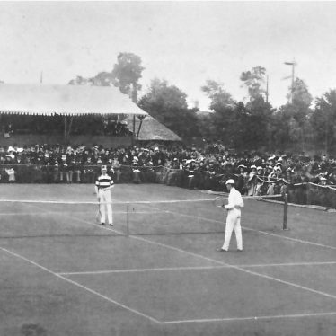
1877: In Inghliterra viene istituito il torneo di Wimbledon.
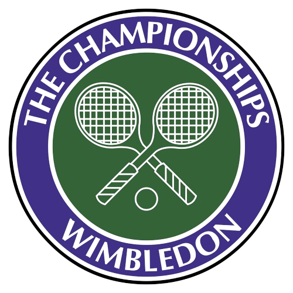
1881: Negli Stati Uniti viene istituito il torneo "US Open".
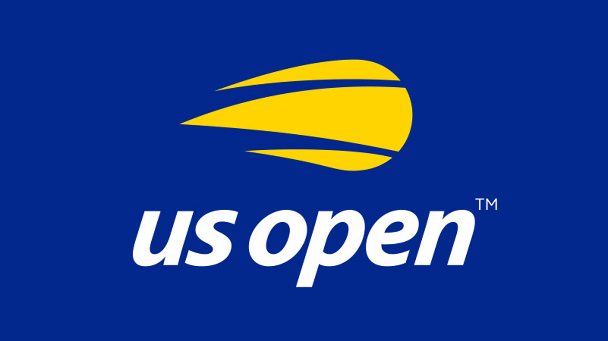
1891: In Francia viene istituito il torneo "Roland Garros".

1895: Si svolge il primo campionato italiano per tennisti.
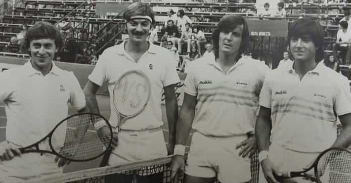
1900: Nasce la Coppa Davis.
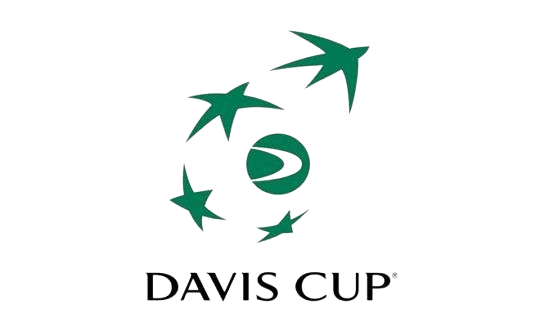
1905: In Australia viene istituito il torneo "Australian Open".
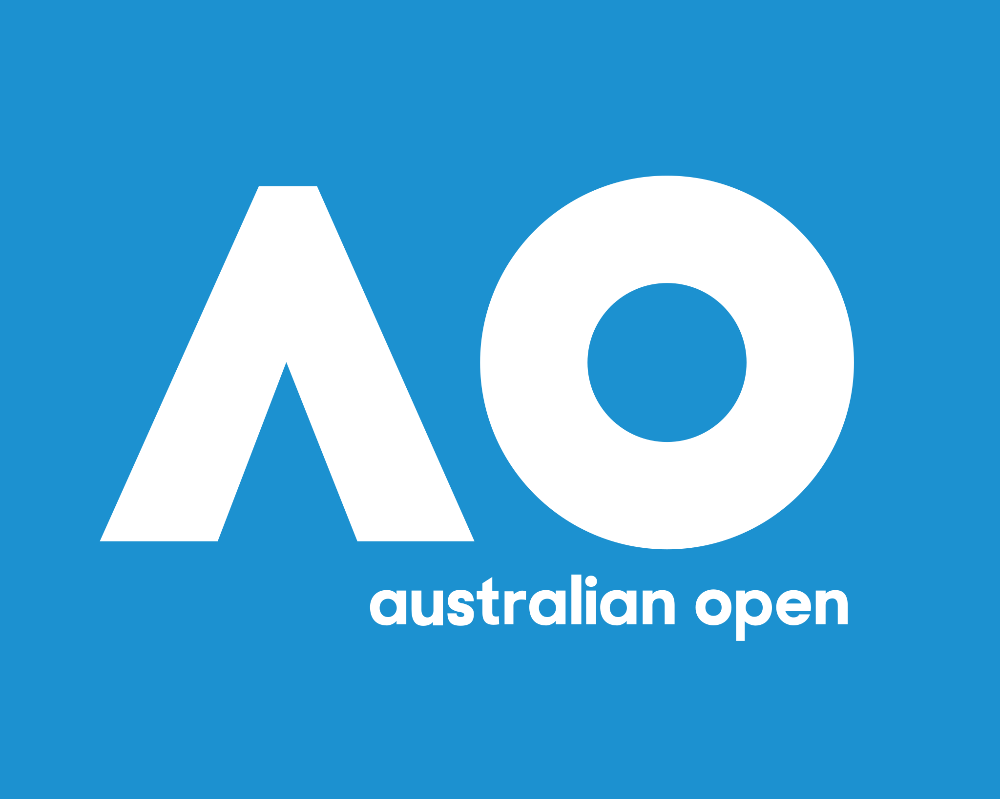
1913: Nasce la ITF (Federazione Internazionale Tennis).
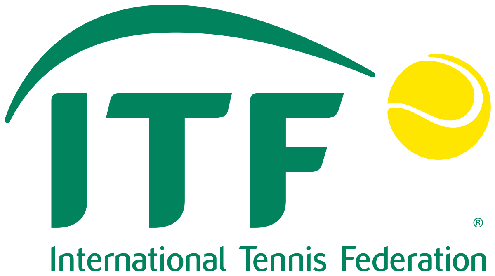
1988: In occasione dei Giochi di Seoul il tennis diventa ufficialmente uno sport olimpico.
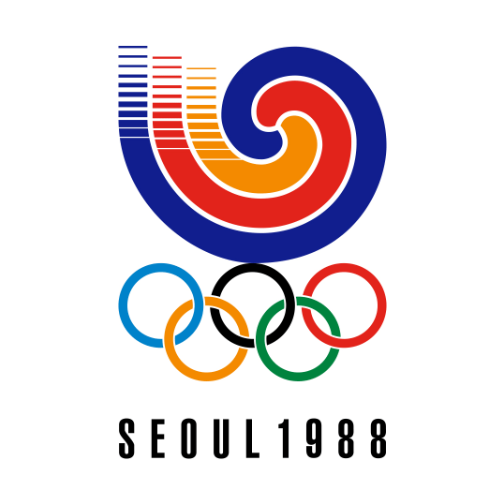
Impara le regole!
Le modalità di gioco:
Singolo
Doppio
Le dimensioni del campo di gioco:
Lunghezza: 23,77 metri
Larghezza:
Singolo: 8,23 metri
Doppio: 10,97 metri
Le dimensioni della rete:
Altezza al centro: 0,914 metri
Altezza ai lati: 1,07 metri
Le caratteristiche della pallina:
Diametro: 6,54 - 6,86 metri
Materiale: Gomma e feltro
Peso: 56 - 59,4 grammi
I diversi terreni di gioco:
Terra battuta
Erba (naturale o sintetica)
Cemento
Lo scopo del gioco:
Colpire la pallina con la racchetta mandandola nella metà campo avversaria e cercando di segnare un punto, ovvero facendo in modo che il giocatore non riesca a ribatterla a sua volta dopo il primo rimbalzo o che commetta un fallo.
L'inizio della partita:
Lancio della moneta: L'arbitro lancia una moneta per determinare il giocatore a cui verrà concessa la possibilità di scegliere il proprio campo e se iniziare in battuta o in ricezione. Tale giocatore, tuttavia, può anche decidere di lasciare la scelta all'avversario.
Riscaldamento: Dopo aver stabilito le modalità di inizio della partita, entrambi i giocatori hanno a disposizione 5 minuti al massimo per riscaldarsi. Subito dopo questo breve periodo di tempo la partita ha inizio con la battuta del giocatore stabilito.
Il servizio:
Durante l'esecuzione del servizio, l giocatore che si trova in battuta non deve né camminare né correre: deve partire da una posizione stazionaria, ma gli è comunque consentito saltare per aumentare la potenza e le probabilità di successo.
Prima di colpire la pallina, il giocatore in battuta non deve, con uno o entrambi i piedi, nè superare la linea di fondocampo nè toccare il prolungamento immaginario delle linee laterali o quello del segno centrale. Inoltre, non deve nemmeno superare la linea di fondocampo.
Affinché il servizio vada a buon fine e possa dare avvio allo scambio, la pallina deve superare la rete e poi rimbalzare nel campo di battuta (delimitato in larghezza dalla linea orizzontale più vicina alla rete) opposto, diagonalmente alla posizione da cui si batte.
Secondo il regolamento, come qualsiasi altro colpo anche il servizio viene considerato valido anche se la pallina tocca in parte le linee che definiscono il campo (di battuta, nel caso del servizio) opposto, purché non le superi interamente.
Falli, infrazioni e situazioni particolari:
Il giocatore che si trova in battuta cammina o corre mentre effettua il servizio, anzichè partire da una posizione stazionaria (come precedentemente specificato, il salto è invece consentito).
Il giocatore che si trova in battuta supera con uno o entrambi i piedi la linea di fondocampo o tocca con essi il prolungamento immaginario delle linee laterali, o quello del segno centrale.
Dopo il servizio la palla rimbalza al di fuori del campo di battuta previsto (il rettangolo diagonale alla posizione di battuta e delimitato in larghezza dalla linea orizzontale più vicina alla rete).
Il giocatore che si trova in battuta manca la pallina durante il servizio.
Durante la battuta la palla colpisce la rete prima di cadere nel campo avversario.
Il giocatore (in battuta o non) non riesce a mandare la palla al di sopra della rete.
Il giocatore colpisce il suo compagno durante le partite di doppio.
Il giocatore invade il campo avversario toccandolo con una parte del corpo e/o con la propria racchetta.
Il giocatore tocca la rete divisoria con una parte del corpo e/o con la propria racchetta.
Il giocatore colpisce la palla prima che essa abbia oltrepassato la linea immaginaria della rete.
La pallina rimbalza due o più volte sulla racchetta del giocatore.
Il giocatore colpisce la pallina con una parte del corpo o strumenti alternativi.
Gli spettatori e/o l'avversario disturbano il giocatore durante la battuta.
Ripetizione della battuta:
In caso di un normale fallo di servizio durante il primo tentativo, il giocatore ha diritto a ripetere la battuta un'altra volta. Tuttavia, se anche il secondo tentativo non andrà a buon fine, il punto verrà assegnato all'avversario.
In caso di "colpo nullo", o "let" (ovvero quando in servizio la pallina colpisce la rete prima di cadere nel campo opposto oppure il battitore viene disturbato), il giocatore può ripetere la battuta, anche se si tratta già del secondo tentativo.
Come si ottiene un punto:
Ace: Il giocatore mette a segno una battuta talmente forte e/o ben eseguita da non lasciare scampo all'avversario, che non riesce a rimandarla nel campo opposto.
Doppio rimbalzo: La pallina rimbalza per due volte consecutive nel campo dell'avversario prima che quest'ultimo riesca a prenderla per rimandarla nel campo opposto.
Infrazione/Fallo: Il giocatore avversario commette un'infrazione o un fallo tra quelli precedentemente elencati, avvenga ciò durante l'esecuzione della battuta oppure durante la risposta.
Il sistema di punteggio:
Il punteggio assegnato ad un giocatore che ha messo a segno 1 punto.
Il punteggio assegnato ad un giocatore che ha messo a segno 2 punti.
Il punteggio assegnato ad un giocatore che ha messo a segno 3 punti.
Il giocatore si aggiudica un "game" (o "gioco", in italiano) quando guadagna 4 punti (15-30-40-vittoria del gioco).
In caso di parità di punti (40-40: "deuce"), si aggiudica il gioco il giocatore in grado di mettere a segno 2 punti consecutivi.
Il giocatore si aggiudica la vittoria di un "set" (o "partita", in italiano) quando vince almeno 6 giochi con almeno 2 giochi di differenza
(6-0, 6-1, 6-2, 6-3,
6-4, 7-5).
In alcuni tornei in caso di parità di giochi vinti (6-6), la partita prosegue ad oltranza fino a quando uno dei due giocatori non riesce ad ottenere un vantaggio di 2 giochi sull'altro.
In altri tornei, invece, in caso di parità di giochi vinti (tradizionalmente 6-6, ma il numero può essere maggiore e varia a seconda del torneo), viene disputato il "tie-break", un gioco decisivo la cui vittoria determina la vittoria del set.
In caso di "tie-break", i punti non vengono più contati secondo la successione 15-30-40-vittoria gioco, bensì dall'1 al 7: il gioco decisivo viene vinto dal giocatore che guadagna almeno 7 punti (possibilità di andare ad oltranza) con un distacco di 2 dall'avversario.
Nel famoso torneo "Australian Open" (Melbourne, Australia), giocato su un duro terreno sintetico, c'è un tie-break ai 10 giochi (9-9) anziché ai tradizionali 7 giochi (6-6).
Nel famoso torneo "Roland Garros" (Parigi, Francia), giocato su un terreno di terra battuta, in caso di parità di giochi (6-6) si va ad oltranza finché non ci sono due giochi di differenza.
Nel famoso torneo di Wimbledon (Wimbledon, Inghilterra), giocato su un terreno erboso, il tie-break del 5° set (ultimo) viene giocato ai 13 giochi (12-12) anzichè ai tradizionali 7 giochi (6-6).
Nel famoso torneo "US Open" (New York, USA), giocato sul cemento, c'è un tie break-tradizionale: in caso di parità di giochi (6-6) viene disputato un gioco decisivo che assegna la vittoria per 7-6.
In alcuni tornei la vittoria finale di un incontro viene decisa al meglio dei 3 set. Poichè il numero è dispari, non è possibile che si verifichino situazioni di pareggio di set tra i giocatori.
In altri tornei, invece, la vittoria finale di un incontro viene decisa al meglio dei 5 set. Anche in questo caso, poichè il numero è dispari non è possibile che si verifichino situazioni di pareggio di set.
Impara a giocare!
I principali tipi di colpi:
Battuta o servizio ("serve")
Una buona battuta è un requisito fondamentale per avere la meglio sull'avversario. La meccanica di questo colpo prevede i seguenti movimenti: alzare la pallina sulla verticale della spalla destra o dell'occhio destro, e posizionare un piede davanti di un piccolo passo all'altro. Una volta alzata la palla, contemporaneamente alzare la racchetta sopra la spalla dell' impugnatura e portare il braccio all'indietro, flettendo il gomito. Quando la palla arriva all'altezza di tiro, stendere verso l'alto il braccio con un movimento rapido e secco, facendo attenzione a che il piatto della racchetta sia parallelo alla rete al punto di impatto con la palla, o al massimo solo lievemente inclinato verso il basso, o, più raramente, verso l'alto. Le spalle vanno tenute perpendicolari alla direzione da imprimere alla palla. È molto importante anche il movimento delle gambe: esse vanno leggermente flesse, e il peso del corpo portato dal piede più arretrato a quello più avanzato nell'istante in cui si opera la battuta.
Dritto ("forehand")
Questo è il colpo effettuato quando la palla viene colpita dallo stesso lato del braccio che tiene la racchetta, dopo il rimbalzo. Nella maggioranza dei giocatori questo colpo è solitamente il più forte, e rispetto al rovescio richiede un movimento più lungo. Esso, inoltre, ha una meccanica piuttosto precisa: in linea generale, il colpo si opera aprendo il braccio, portando il piatto della racchetta all'indietro, e, successivamente, portando il peso del corpo dalla gamba corrispondente al braccio utilizzato, più arretrata di circa un passo rispetto all'altra, alla gamba opposta. La racchetta deve essere rivolta verso il basso, e la palla deve essere colpita approssimativamente lungo la linea del fianco ruotando il busto, operando un colpo secco e con il piatto parallelo alla rete. Il colpo, inoltre, deve essere accompagnato da un lieve movimento della racchetta verso l'alto con una successiva chiusura verso il basso. Infine, per ottenere un tiro corretto non si deve ruotare il polso, ma lo si deve mantenere rigido.
Rovescio ("backhand")
Questo è il colpo effettuato quando la palla viene colpita dal lato opposto rispetto al braccio che tiene la racchetta, dopo il rimbalzo. Il colpo di rovescio, eseguibile (come tutti gli altri colpi) ad una mano o con entrambe le mani, ha una meccanica per certi versi simile al dritto. La caratteristica di base è la lieve rotazione all'indietro della mano sull'impugnatura della racchetta. Quando arriva la palla, di solito si ruota tutto il busto all'indietro, per portare il piatto corde il più possibile all'indietro. Il colpo viene operato ruotando il busto in avanti e con la linea delle spalle perpendicolare rispetto alla linea di rete, con un colpo secco e deciso. Il piatto corde è generalmente tenuto parallelo alla rete. Più il colpo è blando o più si "accompagna" la palla, più sarà scadente il tiro effettuato. Il peso del corpo, al momento dell'esecuzione, va portato dalla gamba opposta al braccio utilizzato (ovvero quella che si trova dallo stesso lato in cui arriva la palla), più arretrata di circa un passo rispetto all'altra gamba, all'altra.
Colpo al volo ("volée")
La volée si effettua colpendo la palla al volo dopo che essa ha superato la rete e prima che rimbalzi nel proprio campo. La volée può essere effettuata sia di dritto che di rovescio, facendo attenzione alla posizione della racchetta e delle gambe: in entrambi i casi si gioca da sotto rete, con la racchetta alta e il piatto corde dritto; nella volée di dritto il colpo va accompagnato al movimento del piede opposto al braccio utilizzato con un passo in avanti, mentre nella volée di rovescio la situazione è opposta, ovvero il piede che deve accompagnare il movimento della racchetta è quello corrispondente al braccio utilizzato. La volée è l'unico colpo che non prevede un movimento di apertura con il braccio e la racchetta, ma solo un posizionamento corretto del corpo e della racchetta stessa. Il colpo "volée", così come il "demi-volée" e lo "smash" (vedi gli altri colpi spiegati successivamente), è anche chiamato colpo di chiusura, in quanto punta a mettere controtempo l'avversario, impedendogli di proseguire nello scambio.
I tipi di battuta:
Battuta Flat
La battuta Flat si utilizza quasi sempre quando si ricercano potenza e mira, ossia l'opportunità di mettere a segno un ACE o di preparare un successivo colpo vincente. Sinonimo di potenza e affidabilità, essa si avvale di uno swing molto basso e non conferisce alcuno spin alla pallina, che avrà un rimbalzo superficiale, più basso. In fase di preparazione la posizione è laterale rispetto alla linea di fondo, con palla e racchetta rivolte verso la rete. Il lancio della palla deve essere effettuato davanti al corpo e leggermente a destra rispetto alla testa, con un impatto diretto dall’alto verso il basso. Nel lancio, occorre raggiungere un’altezza ancora maggiore della massima estensione raggiungibile dal braccio, e successivamente impattare la palla in fase di caduta con la massima potenza. Il peso del corpo deve tendere in avanti, mentre il caricamento deve avvenire tramite il piegamento della schiena. La conclusione avviene accompagnando il colpo e preparandosi con un movimento in avanti per il successivo colpo.
Battuta Slice
Questa variante del servizio, per via dell’effetto impresso, conferisce alla pallina una traiettoria veloce, bassa e ad uscire, ovvero verso l’esterno o il corpo dell’avversario. Il servizio Slice è particolarmente efficace sulle superfici lisce ed è meno rischioso del servizio top spin (Kick). Nella preparazione del colpo, la palla viene lanciata più frontalmente rispetto al servizio Flat, per essere colpita lateralmente e trasversalmente in modo tale da imprimere l’effetto desiderato. La palla viene quindi “spazzolata” cercando una traiettoria che possa uscire dal piatto corde con una rotazione laterale notevole, tale da accentuare la traiettoria ad uscire. Il lancio dovrà essere effettuato più a destra rispetto al servizio Flat, e la racchetta colpirà la palla ad “ore 3”. Un errore molto comune è quello di rallentare lo swing pensando che un movimento più lento possa dare maggiore sicurezza: in realtà, si può cambiare lancio, angolo d’impatto e rotazione, ma lo swing non va mai nè rallentato nè bloccato nella sua parte finale.
Battuta Kick
Il servizio Kick, un’altra variante del servizio, è un'arma molto efficace con cui iniziare il gioco, in quanto ha come obiettivo quello di far uscire la palla dal piatto corde con una rotazione tale da procurare un rimbalzo molto alto, dopo il contatto con il terreno. La velocità della pallina, tuttavia, è ridotta, e talvolta l'avversario ha tutto il tempo per rispondere. Il lancio della palla è spostato più a sinistra e non davanti al corpo come nel “Flat”, bensì appena dietro la testa e al di sopra della spalla. La racchetta deve colpire la palla con una traiettoria direzionata - immaginando un orologio - dalle ore 8 alle ore 2, e con un' importante spinta verticale procurata dal corpo. La traiettoria alta sulla rete garantisce sicurezza e molta rotazione con lo scopo di tenere lontano l’avversario. Prima dell’impatto con la pallina, la racchetta deve eseguire un movimento che va da sinistra a destra. Il movimento del braccio, inoltre, cambia nella parte finale e l’impatto con la palla è meno diretto, con un movimento dal basso verso l’alto.
La direzione dei colpi:
Lungolinea (Down The Line)
Questo colpo viene generalmente eseguito da fondocampo dopo il rimbalzo della pallina, portando il busto e stendendo il braccio (e quindi la racchetta) in avanti per dare profondità e calibrando l'impatto del colpo, che deve avvenire mentre la traiettoria di rimbalzo è in salita: in questo modo, infatti, si anticipa il colpo lasciando meno tempo all'avversario per effettuare il colpo di risposta. È importante fare attenzione anche alla posizione dei piedi: in particolare, è preferibile posizionarsi in "square stance", ovvero con il piede opposto al braccio che regge la racchetta più avanti di circa un passo rispetto all'altro, in modo tale da facilitare il trasferimento del peso del corpo da dietro verso avanti. Come il passante incrociato, anche il passante lungolinea spiazza l'avversario che una volta a rete deve essere molto reattivo o verrà superato in velocità dalla pallina.
Incrociato (Cross-Court)
Questo colpo viene generalmente eseguito da fondocampo dopo il rimbalzo della pallina, ruotando tutto il busto in diagonale e trasferendo un'adeguata potenza al momento del colpo, che deve avvenire mentre la traiettoria di rimbalzo è in discesa. Questo colpo necessita di una grande sensibilità e viene solitamente effettuato quando l'avversario è a rete, tenendo la traiettoria della palla molto bassa in modo tale da rendere il gioco al volo del rivale particolarmente complesso. È importante fare attenzione anche alla posizione dei piedi: in particolare, è preferibile posizionarsi in "semi-open stance", ovvero con il piede opposto al braccio utilizzato per reggere la racchetta leggermente più avanti, quasi in linea, con l'altro, in modo tale da facilitare la rotazione del busto e il trasferimento del peso del corpo in diagonale. Come il passante lungolinea, anche il passante incrociato spiazza l'avversario che una volta a rete deve essere molto reattivo o verrà superato in velocità dalla pallina.
Le schiacciate:
Schiacciata (Smash)
È un particolare tipo di colpo che si esegue prima o dopo il rimbalzo della palla. La sua meccanica è molto simile a quella della battuta, in quanto la pallina viene colpita con il braccio sollevato verticalmente, e permette il trasferimento di una notevole quantità di energia. Spesso si tratta di un colpo di chiusura e/o vincente.
Veronica (Backhand Smash)
Si tratta di un colpo spettacolare che, quando vincente, scatena sempre l'entusiasmo assordante del pubblico. Esso viene effettuato volgendo la schiena verso la rete e colpendo la pallina al volo di rovescio, schiacciandola verso il basso nella metà campo avversaria.
I colpi vicini alla rete:
Smorzata (Drop-shot)
Questo colpo può essere effettuato prima o dopo il rimbalzo della pallina ed è utilizzato con lo scopo di rendere il rimbalzo successivo (ovvero quello nella metà campo dell'avversario) minimo, ovvero il più basso possibile, e vicino alla rete per sorprendere il rivale e mandarlo fuori tempo.
Controbalzo (Demi-Volée)
Anche chiamato "semivolo", questo colpo viene effettuato non appena la palla tocca il terreno, ovvero in controbalzo, nei pressi della rete. In diversi casi può essere un colpo di chiusura e/o vincente.
I colpi in rapido movimento:
Colpo in avanzamento
Si tratta di un colpo giocato impattando la palla mentre si è in rapido movimento in avanti verso di essa; molte volte si tratta di un colpo di necessità, o anche di attacco.
Tweener (Gran Willy)
Anche chiamato "Gran Willy" (in onore di Guillermo "Willy" Villas, il primo giocatore a proporre questo colpo in un campo da tennis), il tweener è un colpo spettacolare e molto particolare effettuato quando da fondocampo (ma talvolta anche da una posizione in prossimità della rete) si colpisce la palla in mezzo alle gambe in modo frontale, rivolti verso la rete, oppure dando le spalle ad essa, mentre si torna a fondocampo. Di regola viene utilizzato per rimettere in campo la pallina in una situazione quasi disperata sperando in un errore nell'avversario: infatti, mentre il tennista che effettua il colpo rincorre la pallina verso il fondo del campo, il rivale ha tutto il tempo di salire a rete e concludere facilmente il punto. Anche questo colpo ha una meccanica piuttosto precisa: la palla va lanciata e colpita al volo di lato mandandola dall’altra parte. È importante anche effettuare due o tre passi dopo l’impatto per aiutarsi nella spinta della pallina e creare un colpo più fluido e dinamico.
Sfruttare gli "effetti":
Flat (nessun effetto)
Topspin
Il top-spin è quella rotazione grazie alla quale la pallina passa alta sopra la rete, rimbalza profonda e dopo il rimbalzo schizza in alto, obbligando così l’avversario a colpire una palla vicina al corpo. La meccanica fondamentale che permette di creare questo effetto consiste nel portare la racchetta al di sotto del livello della pallina prima dell'impatto (ciò può essere ottenuto piegando le gambe e abbassando il braccio utilizzato prima del colpo) e nel colpire quest'ultima dal basso verso l'alto "spazzolandola", in modo tale da imprimere con la racchetta un movimento rotatorio in avanti. A causa della rotazione impressa allla pallina si genera un attrito nella sua parte superiore, ed un'accelerazione nella sua parte inferiore: di conseguenza, la traiettoria diventa parabolica discendente. La traiettoria, inoltre è tendenzialmente più alta e più corta rispetto ad un colpo Flat, ma dopo il rimbalzo la palla in topspin assumerà più energia (proprio per la sua rotazione) e rimbalzerà molto più alta e lunga.
Backspin
La rotazione backspin è sostanzialmente opposta a quella in topspin: la palla viene colpita con "sfregamento" dall'alto verso il basso e ruota sul proprio asse all'indietro, producendo una traiettoria tesa sulla rete e un rimbalzo più basso sul campo. Anche questo colpo, inoltre, prevede una meccanica ben precisa: la fase di preparazione deve avvenire in maniera compatta, con entrambe le spalle che girano insieme, e alla fine di essa la racchetta deve trovarsi dietro la testa e sopra la linea delle spalle. L'angolo che il polso forma con l'avambraccio non è diritto, e la racchetta deve formare una sorta di "L" con quest'ultimo: mantenere tale angolo è essenziale per permettere di arrivare all'impatto con la giusta inclinazione del piatto corde, conferendo solidità e controllo. Inizialmente il gomito è piegato: la sua successiva distensione permetterà di tagliare e spingere meglio la palla verso il basso e in avanti. Durante il colpo, infine, il peso del corpo va trasferito in avanti mediante un movimento graduale e fluido.
Sfruttare le diverse superfici:
Terra battuta
I campi da tennis in terra battuta sono più diffusi in Europa e Sud America. Sebbene inizialmente più economici da costruire, questi campi richiedono una gestione molto attenta: potrebbero infatti aver bisogno di linee dipinte o arrotolate più spesso, e anche il drenaggio dell’acqua è un fattore rilevante. Esiste una grande varietà di campi di questo tipo, con il colore del campo come indicazione del tipo di terra battuta utilizzata: i campi rossi sono tipicamente costituiti da mattoni frantumati e scisto, quelli verdi da basalto frantumato e quelli blu da mattoni frantumati. I campi grigi sono invece realizzati in argilla naturale da terra. Come gli altri tipi di campi, anche quelli in terra battuta influenzano il modo in cui la palla ruota e viene restituita: in particolare, essi favoriscono i giocatori difensivi. Giocando su questo tipo di campi, i tennisti conservano più energia potendo scivolare nei loro colpi invece di fermarsi completamente. Il rimbalzo della palla, infine, è più alto e lento di quello di un campo duro.
Erba
I campi da tennis in erba sono visti di rado, a causa della pesante manutenzione richiesta da frequenti irrigazioni e falciature e della facile deteriorabilità (spesso si parla di "erba battuta"). Essi richiedono molto tempo per asciugarsi dopo la pioggia, ma nel complesso la superficie dell'erba è molto più tollerante fisicamente per il corpo umano rispetto ai campi in cemento. I campi in erba sono i più veloci, in quanto scivolosi e morbidi. Composti da erba coltivata su terreno duro, essi offrono molte variabili a seconda di quanto recentemente sono stati falciati, della salute dell’erba e di quanto recentemente altri hanno giocato sul campo. Tutti questi fattori influenzano i rimbalzi della palla, i quali tendono ad essere spesso veloci, bassi e imprevedibili. Gli scambi sono brevi, rapidi e spettacolari, e il servizio gioca un ruolo più importante che su altre superfici. Ad essere avantaggiati su questa superficie sono quindi i giocatori di "Serve&Volley" e, più in generale, quelli dotati di un buon servizio e abili nel gioco a rete.
Cemento
I campi da tennis duri sono i campi da tennis più comunemente costruiti per uso pubblico e privato in Nord America: essi, infatti, richiedono poca manutenzione, sono durevoli e resistono bene agli agenti atmosferici, asciugandosi molto più velocemente dei campi in erba e in terra battuta dopo la pioggia. Essi, inoltre, sono composti da materiali rigidi come cemento o asfalto, e quindi sono ricoperti da uno strato acrilico o sintetico come sigillatura. La superficie liscia e regolare consente un rimbalzo della pallina abbastanza veloce e non troppo alto, e risulta quindi adatta al classico schema di gioco "Servizio e dritto". Il lato dolente, tuttavia, consiste nel fatto che studi scientifici hanno dimostrato che tali campi hanno più probabilità di causare a lungo termine seri problemi fisici (in particolare alla schiena e agli arti inferiori). Inoltre, nel caso di campi esterni, come sulle superfici erbose alla prima goccia di pioggia il gioco deve essere interrotto per la pericolosità indotta dalla scivolosità del campo.
Le principali strategie vincenti:
Colpi difensivi
Questa strategia consiste nel giocare continuamente colpi di difesa dagli attacchi dell'avversario, e mira a reinviare la palla al di là della propria metà campo nella maniera più sfavorevole possibile per l'avversario, talvolta anche con il cosiddetto "moonballing", ovvero conferendo alla pallina un'esagerata elevazione verticale con l'intento di spingere il rivale ad effettuare uno scomodo smash. Questa strategia, tuttavia, richiede una grande sensibilità da parte del tennista e può non essere ideale in alcuni casi.
Colpi di attacco
Questa strategia è molto efficace e consiste nell'eseguire, dopo uno scambio più o meno lungo, uno o più colpi offensivi mirati a mettere in difficoltà l'avversario prima di tentare un colpo vincente in grado di chiudere lo scambio (es. volée, accelerazione di dritto o rovescio). Questi colpi di attacco, inoltre, possono anche diventare vincenti se, carichi di un'adeguata potenza e ben piazzati, non riescono ad essere contrastati dall'avversario.
Variazioni di gioco
Questa strategia consiste nel cambiare continuamente tipi di colpo, nonchè la loro direzione, velocità ed effetto al momento del rimbalzo a terra. La variazione riguarda anche il ritmo e l'intensità di gioco, che possono essere diminuiti per poi essere accelerati o viceversa. Questa strategia richiede una buona abilità tecnica del giocatore che la applica e ha più o meno lo stesso obiettivo della tecnica di gioco in contropiede, ovvero quello di mandare fuori tempo l'avversario per poi effettuare un colpo di chiusura vincente.
Colpi profondi
Questa strategia, spesso utilizzata dai tennisti di alto livello, è piuttosto efficace e consiste nell'eseguire colpi molto profondi e veloci, ovvero carichi di grande potenza. In generale tanto più il colpo è profondo e veloce, ovvero diretto nella seconda metà di campo, tanto maggiore è la difficoltà e minore l'efficacia della risposta dell'avversario. Variando la profondità del colpo, oltre che l'angolazione, si ottengono buoni risultati riuscendo a far avanzare o arretrare l'avversario a proprio piacimento, con lo scopo di concludere successivamente lo scambio con un colpo di chiusura vincente.
Contropiede
Questa strategia consiste nell'eseguire uno o più colpi di dritto o di rovescio direzionati dalla parte opposta rispetto a quella in cui si trova o si sta muovendo l'avversario. L'obiettivo è quello di cogliere quest'ultimo in controtempo, dunque le probabilità di successo sono maggiori se il rivale è posizionato o è in movimento verso uno dei due lati del campo. Si tratta di una strategia estremamente efficace, utilizzata spesso dai tennisti di alto livello. Richiede, tuttavia, una grande sensibilità del giocatore attaccante, che deve essere in grado di piazzare la palla il più vicino possibile alle righe di delimitazione del campo.
Colpo mascherato
Questa strategia consiste nel mascherare abilmente, durante la fase di preparazione, tutti i colpi effettuati fingendo di mirare nella direzione opposta rispetto a quella finale che verrà impressa alla palla in modo tale da non permettere la lettura a distanza del movimento e/o dell'impatto di essi da parte dell'avversario. Si tratta di una strategia piuttosto diffusa tra i tennisti di alto livello, e richiede una buona capacità di coordinazione da parte del giocatore per evitare colpi calibrati in modo errato in potenza e/o direzione.
Conosci i migliori giocatori storici e attuali!
Novak Djokovic:

Roger Federer:

Rafael Nadal:
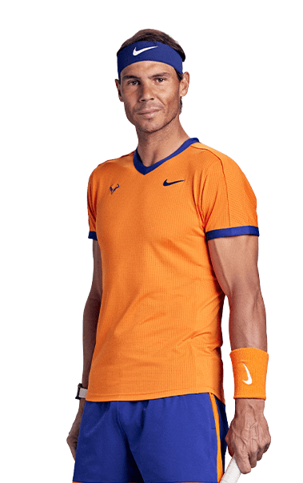Carlos Alcaraz:
Daniil Medvedev:

Jannik Sinner:
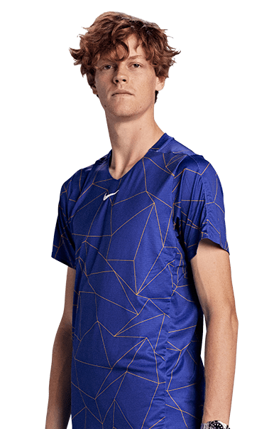Andrej Rublëv:
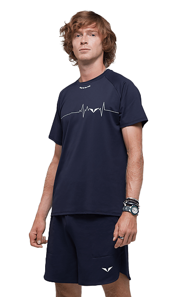Stefanos Tsitsipas:

Alexander Zverev:
Holger Rune:
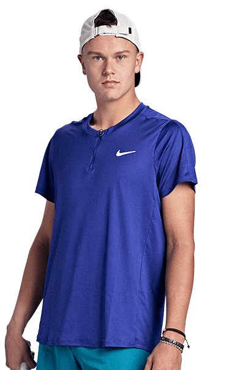Scopri alcune curiosità!
Il nome iniziale del tennis:
Si crede che le origini del tennis risalgano addirittura al 12° secolo in Francia, dove questo sport era inizialmente giocato con le mani. Non a caso, esso era originariamente chiamato "jeu de paume," che significa "gioco di palmo."
L'origine della parola "tennis":
Si crede che la parola "tennis" derivi dal francese "tenez", che significa "prendere" o "ricevere": questa parola, infatti, era solitamente gridata dai giocatori prima di lanciare la palla in campo.
La partita più lunga:
La partita più lunga nella storia del tennis è stata giocata a Wimbledon, in Inghilterra, nel 2010 tra John Isner e Nicolas Mahut; è durata più di 11 ore e ha avuto luogo in tre giorni.
La battuta più veloce:
La battuta più veloce mai registrata nei match singoli maschili ha raggiunto la velocità di 163.7 mph (263.4 km/h) ed è stata realizzata da Samuel Groth in Australia nel 2012.
"Grande Slam":
L'espressione "Grande Slam", derivata dal gioco di carte "bridge", indica la vittoria, da parte di un tennista, dei 4 tornei principali in un solo anno: Australian Open, Roland Garros, Wimbledon e US Open.
La tecnologia di replay istantaneo:
Il tennis è stato uno dei primi sport ad adottare l'utilizzo della tecnologia di replay istantaneo (denominata "Hawkeye") per rivedere e controllare i colpi dubbi al limite del campo.
Il colore delle palline:
Le palline da tennis erano originariamente bianche, ma dal 1972 sono diventate gialle per renderle maggiormente visibili dai giocatori in campo e sulla televisione a colori.
Il punto più lungo della storia:
Lo scambio più lungo mai registrato in un match professionale di tennis è durato ben 29 minuti e 31 secondi, durante una partita disputata nel 1984 tra Vicky Nelson-Dunbar e Jean Hepner.
Il materiale delle palline:
Le palline da tennis erano originariamente fatte di legno massello o pelle e sono state sostituite solo gradualmente dalle palline di gomma e feltro a cui siamo abituati al giorno d'oggi.
Il materiale delle racchette:
Le racchette da tennis erano inizialmente fatte di legno, ma alla fine degli anni '60 sono stati introdotti metallo e nuovi materiali compositi; al giorno d'oggi, esse sono solitamente realizzate con materiali leggeri come grafite e fibra di carbonio.
Il "grugnito":
Il suono emesso dai tennisti nel momento in cui colpiscono la pallina viene comunemente chiamato "grugnito". Alcuni giocatori credono che grugnire aiuti a generare più potenza, mentre altri affermano che si tratta di un suono naturale causato dallo sforzo fisico.
Il match con più spettatori:
Il match che ha registrato il maggior numero di spettatori è stato giocato nel 2010, quando 35,681 persone hanno assistito ad un match di esibizione tra Serena Williams e Kim Clijsters al King Baudouin Stadium a Bruxelles, in Belgio.